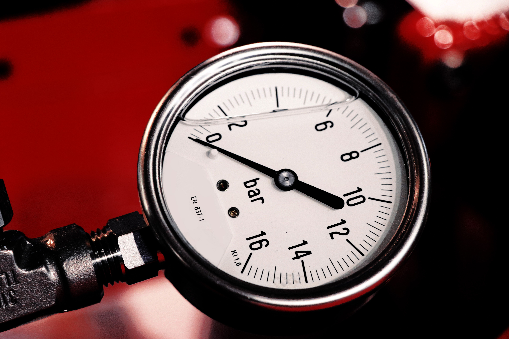

Oil Pressure Light On: Why You Must Stop Immediately

The oil pressure warning light is one of the most important warnings on your dashboard. It usually looks like a red oil can with a drop coming from its spout. When it illuminates while the engine is running, it may indicate that the engine is not receiving adequate oil pressure.
Engine oil lubricates moving parts and helps reduce friction and heat. If oil pressure becomes too low, important engine components may not receive the lubrication they need. Continuing to run the engine can lead to expensive damage.
This warning is different from a routine oil-change reminder. An oil pressure light requires immediate attention, even if the engine seems to run normally.
What Does the Oil Pressure Warning Light Mean?
The oil pressure light typically indicates that the engine oil pressure is below the level expected by the vehicle's monitoring system. It does not always mean that the engine is completely out of oil.
Possible causes include a low oil level, an oil leak, an oil pump problem, a blocked oil pickup, internal engine wear, or a faulty oil pressure sensor or wiring. The exact cause must be diagnosed.
Because the consequences of genuinely low oil pressure can be severe, treat a red oil pressure warning as urgent until the cause is identified.
What to Do When the Oil Pressure Light Comes On
Step 1: Pull Over Safely
Reduce speed as appropriate, find a safe place to stop, and switch off the engine. Do not keep driving to reach your destination or a repair shop. If you cannot safely stop immediately, move only as far as necessary to reach a safe stopping place.
Step 2: Turn the Engine Off
Once stopped, turn the engine off. Do not leave it running while you search for the cause. If you hear knocking, grinding, or other unusual engine noises, do not restart it.
Step 3: Check the Engine Oil Level
Park on level ground and allow the oil to settle according to the procedure in your owner's manual. Make sure the vehicle is in a safe location and avoid touching hot engine components. If your vehicle has a dipstick, remove it, wipe it clean, reinsert it fully, and check the level again.
Some vehicles use an electronic oil-level display instead of a dipstick. Follow the manufacturer's instructions for checking the level.
Step 4: Add Oil Only If the Level Is Low
If the oil level is below the recommended range, add the correct type of engine oil in small amounts and recheck the level. Use the oil specification listed in your owner's manual. Do not overfill the engine.
If you see a significant oil leak, the level is extremely low, or you are unsure what caused the warning, do not restart the engine. Arrange professional assistance.
Step 5: Do Not Restart If the Warning May Indicate Low Pressure
Adding oil does not fix every oil pressure problem. If the oil level is normal, the warning remains unexplained, or the light came on with unusual engine noise, have the vehicle transported to a repair shop rather than driving it.
Common Causes of an Oil Pressure Warning
1. Low Engine Oil Level
If the engine has too little oil, the oil pump may not be able to maintain the required pressure under certain conditions. Low oil can result from an external leak, oil consumption inside the engine, or missed maintenance.
2. An Oil Leak
Leaks may occur around the oil filter, drain plug, valve cover gasket, oil pan, or other engine seals. Oil spots beneath the vehicle or fresh oil around engine components may indicate a leak, but some leaks are difficult to see.
If the warning appears together with visible oil loss, do not assume that topping up the oil makes the vehicle safe to drive. The leak and the pressure warning both need attention.
3. Incorrect or Degraded Engine Oil
Oil that does not meet the manufacturer's specification or oil that has deteriorated may affect lubrication performance. Using the wrong viscosity can also contribute to pressure problems under certain operating conditions.
Always use the oil grade and specification recommended for your specific engine. An oil change alone may not solve a warning caused by a mechanical problem.
4. Faulty Oil Pump or Blocked Oil Pickup
The oil pump circulates engine oil through the lubrication system. A worn or damaged pump, a blocked pickup screen, or another restriction may prevent the system from maintaining sufficient pressure.
These problems usually require mechanical diagnosis. Adding more oil will not correct a failed pump or a blocked oil passage.
5. Worn Internal Engine Components
Internal engine wear can increase oil clearances and reduce the system's ability to maintain the specified pressure. This is one possible cause, particularly in a high-mileage engine, but it should not be assumed without proper testing.
6. Faulty Oil Pressure Sensor or Wiring
A failed sensor, damaged wire, or electrical connection problem can sometimes trigger an incorrect warning. However, it is unsafe to assume the sensor is faulty before actual oil pressure has been checked.
A technician may test the system and measure oil pressure with appropriate equipment to determine whether the warning reflects a real lubrication problem.
Oil Pressure Light vs. Oil Change Reminder
These warnings serve different purposes. An oil pressure warning usually appears as a red oil-can symbol and may indicate an urgent lubrication problem. An oil change reminder generally indicates that scheduled maintenance is due.
The appearance and color of dashboard symbols vary by vehicle, so check the owner's manual if you are uncertain which warning you are seeing.
Do not treat a red oil pressure warning as a routine maintenance reminder. Stop safely and switch off the engine before investigating.
Why Does the Oil Pressure Light Come On at Idle?
If the oil pressure light appears when the engine is idling, the system may be unable to maintain sufficient pressure at low engine speed. Possible causes include a low oil level, an unsuitable oil viscosity, a worn oil pump, internal engine wear, or a faulty sensor.
The fact that the light disappears when you accelerate does not prove that the engine is safe. If the red oil pressure warning comes on while the engine is running, stop safely and switch the engine off. Have the cause checked before continuing to drive.
Can You Drive with the Oil Pressure Light On?
You should not continue driving with an active red oil pressure warning. Low oil pressure can damage engine bearings and other lubricated components, potentially leading to major engine failure.
Stop in a safe place, switch off the engine, and check the oil level only when it is safe. If the oil level is normal or the warning does not have an obvious, safely correctable explanation, arrange roadside assistance or towing.
Even if the warning disappears after restarting, the underlying problem may still exist. Do not rely on the light going out as proof that the vehicle is safe to drive.
How Much Does It Cost to Fix an Oil Pressure Problem?
Repair costs depend on the cause, vehicle, engine design, parts, and labor rates. Correcting a low oil level may be inexpensive, while repairing a significant leak, replacing an oil pump, or addressing internal engine wear can be much more costly.
A faulty sensor may be less expensive to repair than an internal engine problem, but the sensor should not be replaced based on guesswork alone. Actual oil pressure may need to be measured to confirm the diagnosis.
Ask a qualified repair shop to diagnose the cause and provide an estimate before authorizing major work. Avoid driving the vehicle while a genuine low-pressure condition remains unresolved.
Frequently Asked Questions
Can I drive my car if the oil pressure light is on?
Do not continue driving with an active red oil pressure warning. Pull over safely, turn off the engine, and check the oil level when safe. If the cause is not clearly resolved, arrange professional assistance or towing.
Will adding oil turn off the oil pressure light?
It may help if the warning is caused by a low oil level, but adding oil will not fix every cause of low pressure. If the light stays on or returns, switch off the engine and have the problem diagnosed.
Why does the oil pressure light come on at idle?
Possible causes include low oil level, incorrect oil viscosity, a worn oil pump, internal engine wear, or a faulty sensor. If the red warning appears while the engine is running, stop safely and turn the engine off rather than revving it to make the light disappear.
Is the oil pressure light the same as the oil change light?
No. An oil pressure warning may indicate an urgent lubrication problem, while an oil change reminder usually indicates scheduled maintenance is due. Check your owner's manual to identify the symbol on your vehicle.
Can a faulty oil pressure sensor cause the warning light to turn on?
Yes, a faulty sensor or wiring problem can cause an incorrect warning. However, actual oil pressure should be checked before assuming the sensor is responsible, because genuinely low pressure can damage the engine.